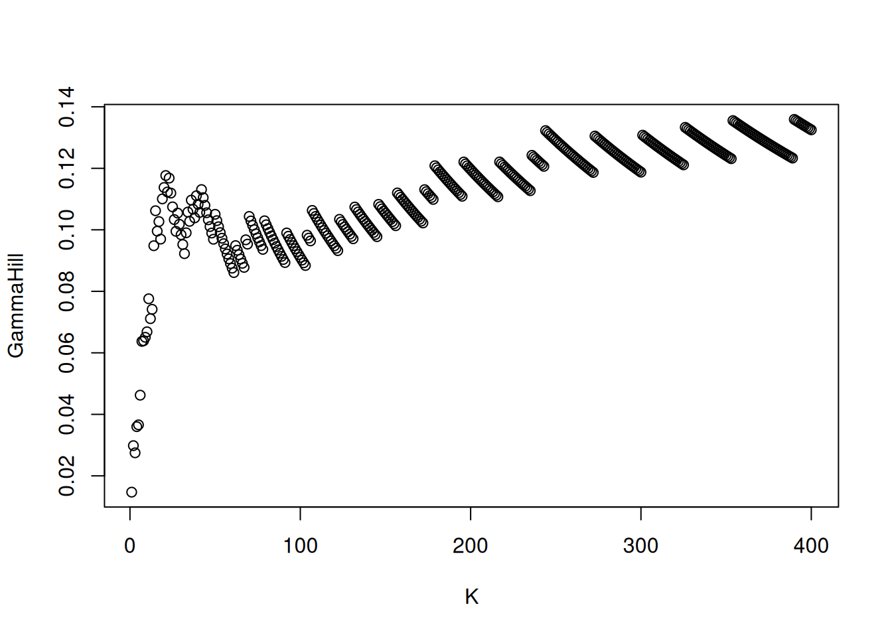
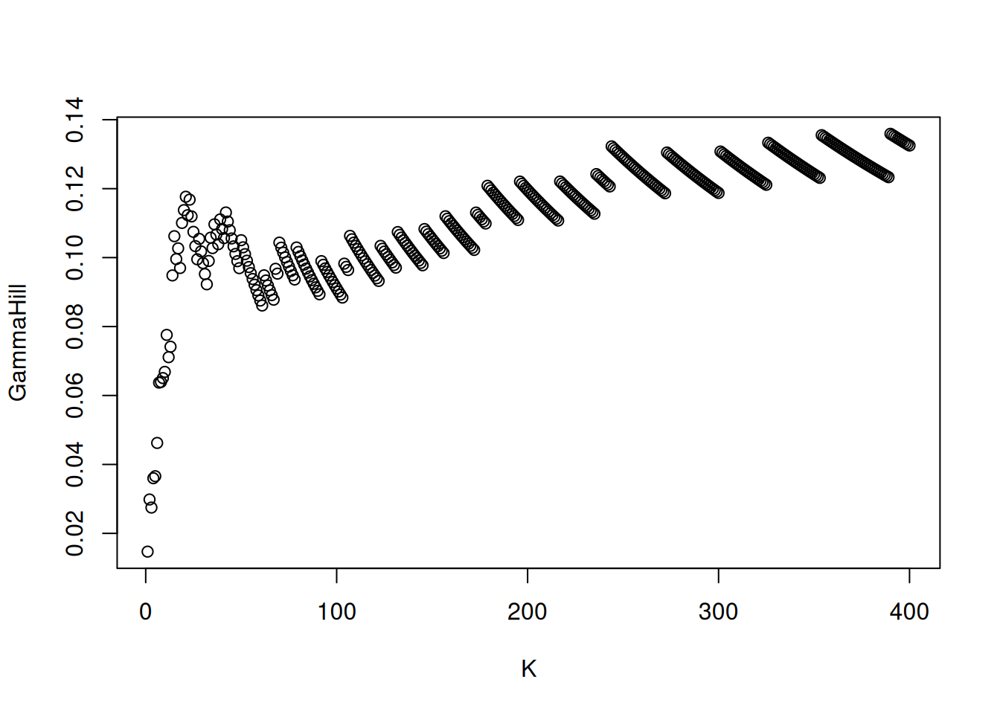

data(frwind, package = "mev")
lyon <- sort(frwind$S2, decreasing = TRUE)
remotes::install_github("lbelzile/rbm", quiet = TRUE)
# Fit Hill's estimator
hill_est <- rbm::hill(data_array = lyon,
idx = 1:400)
plot(hill_est)
There are multiple alternative estimators of the shape parameter for heavy-tailed data, the most popular of which is the Hill (1975) estimator . Consider a random sample of order statistics \(Y_{(1)} > \cdots > Y_{(n)}\). The latter is, for exceedances above \(Y_{(n-k)} >0\), \[\begin{align} H_{n,k}(\boldsymbol{Y}) = \frac{1}{k}\sum_{i=n-k+1}^{n} \log Y_{(i)} - \log Y_{(n-k)}, \qquad (j=1, 2), \label{eq:Hillest} \end{align}\]
Under a second order regular variation assumption and provided \(\lim_{k \to \infty} k^{1/2}A(n/k) = \lambda\in \mathbb{R}\), Hill’s estimator is asymptotically normal with \[\begin{align*} k^{1/2}(H_{n,k} - \xi) \to \mathsf{No}\{\lambda/(1-\rho), \xi^2\}, \qquad \xi>0, \rho \leq 0; \end{align*}\] the asymptotic bias term is dictated by the rate at which the number of extreme observations grows relative to the total sample size and depends on the unknown second-order auxiliary function \(A(\cdot)\) which is distribution-specific. The estimator is consistent for \(\xi\) provided \(k=k(n)\) is an intermediate sequence satisfying \(k/n \to 0\) as \(k, n \to \infty\) such that \(\lambda \to 0\). Note the asymptotic variance, to be constrasted with that of the maximum likelihood estimator of the shape for the generalized Pareto shape, which is \((1+\xi)^2\).
data(frwind, package = "mev")
lyon <- sort(frwind$S2, decreasing = TRUE)
remotes::install_github("lbelzile/rbm", quiet = TRUE)
# Fit Hill's estimator
hill_est <- rbm::hill(data_array = lyon,
idx = 1:400)
plot(hill_est)
We can see that the Hill estimator values are quite stable (which is seldom the case) and however around 0.1. However, maximum likelihood estimators of the shape parameter \(\xi\) are much closer to zero and negative for other wind speed series. The noticeable tilted staircase pattern is an artefact of rounding.
A simple graphical method for choosing the number of order statistics to keep is a plot of the rank against shape parameters, termed Hill plots. Practical recommendations are that (1) the number of order statistics should be restricted (say 20 to 500), (2) the graph is more easily interpreted when the \(x\)-axis shows normalized log ranks \(\log(k)/\log(n)\), and (3) parameters should be smoothed using a moving window estimator, as the sample path of the Hill estimator are analogous to a Brownian motion.
Note that Hill estimator is not location invariant. The pointwise confidence intervals reported by must methods are based on exact Pareto tails, so are at best approximate.
There are multiple alternative estimators of the shape parameter: extensive simulation studies show that the threshold selection performance using the random block maxima estimator of Wager (2014) is competitive. The latter is a \(U\) statistic and has \(\mathcal{C}^{\infty}\) sample paths: the selection is based on empirical risk minimization using a finite-difference approximation to the squared derivative of the process, subject to a penalty term. Although the computational cost is higher than Hill’s estimator, it can be kept reasonable by restricting attention to only largest exceedances.
Other threshold selection methods, including the minimization of the asymptotic mean squared error of the Hill estimator highlighted in Section 2 of Caeiro & Gomes (2016), also works well but can fail catastrophically in some settings. Here, the answer (in terms of the tail index \(\alpha=1/\xi\)), is similar to other packages
Many such estimators are available from the tea package. Extensions that deal with censoring and conditional estimators (ReIns), time series (extremefit), etc. but we will not attempt to cover those.
Given an estimate of a positive shape parameter, we can get quantile estimates through Weissman (1978) formula. The estimator of the quantile at level \(1-p\), for small \(p\), is \[\begin{align*}
Q^W_{k,n}(1-p) = Y_{(n-k)} \left\{ \frac{k+1}{p(n+1)} \right\}^{H_{k,n}}, \end{align*}\] where \(H_{k,n}\) is the Hill estimator of the shape parameter and \(Y_{(n-k)}\) is the \((n-k)\)th order statistic, acting as threshold. While there are software that return these quantities, including the ReIns, evt0 and extremefit packages, they are easily coded.
Below, we show how to estimate the 0.999 quantile of the distribution by extrapolating the shape
Uncertainty statements, if any, could be obtained by bootstrap methods or using asymptotic normality, but given the sampling distribution of the quantile estimator is strongly asymmetric, Wald-type (symmetric) confidence intervals are bound to give poor coverage.